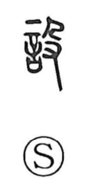

設

Kun: moukeru, shitsuraeru | On: setsu
set up ・ establish ・ arrange ・ provide ・ prepare
Explanation
設 combines 言, words of oath or prayer, with 殳. Here 殳 is a hand holding a feathered ritual ornament. The ornament purifies the spoken pledge and accompanies its presentation before the gods.
This belongs to setting up the place of worship: laying out vessels, mats, and the other things required for the ceremony. 設 names that preparation and arrangement, with the sacred declaration given its proper setting.
The meaning broadens to establishing, providing, placing, or devising something generally. What is prepared can be a physical installation or an intended course of action. A hypothetical arrangement gives the further use ‘suppose’ or ‘if,’ where a situation is set before the mind for consideration.